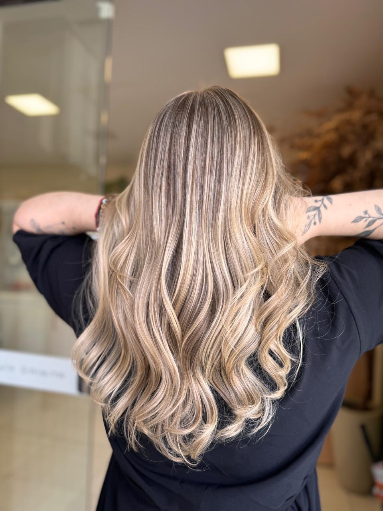

Mechas · Trabalho do salão
Ondas e iluminação
Os tons claros acompanham as curvas do comprimento até as pontas.
Consultar sobre estas mechasNa sua próxima visita
Leve a foto à equipe e converse sobre contraste, histórico de cor e intervalo de retoque.
Ver serviço de mechas →
Ver detalhe do acabamento
Observe como as mechas se distribuem entre as ondas.